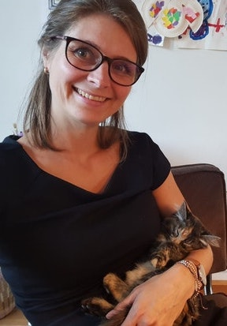
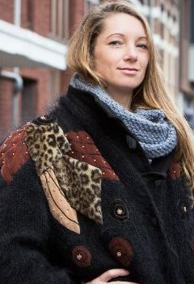
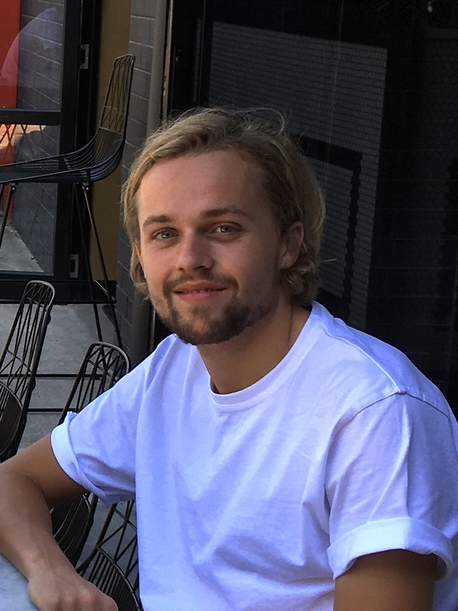
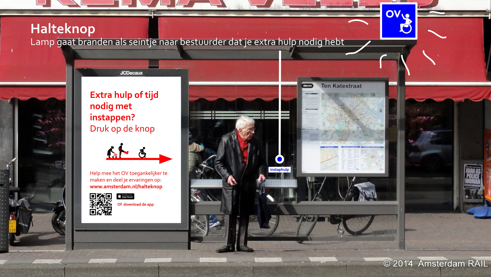
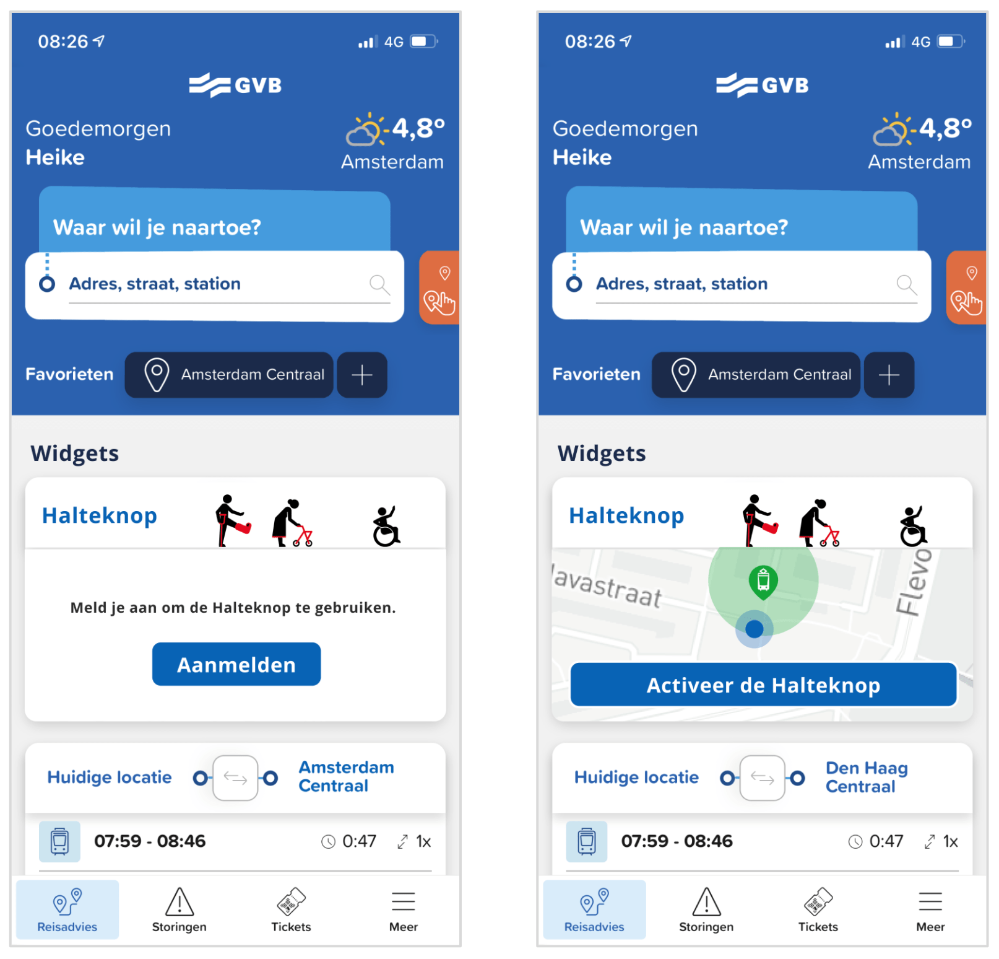
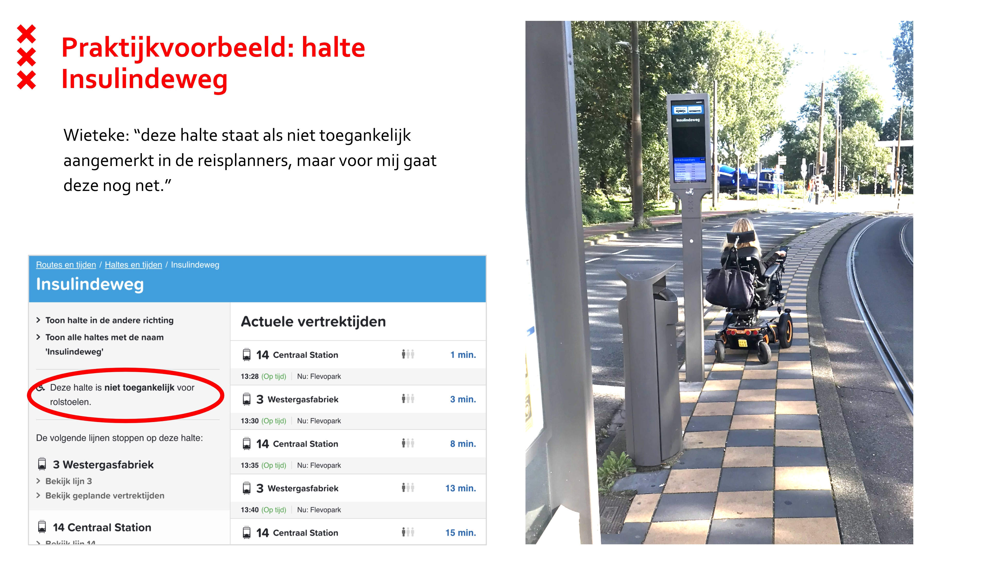
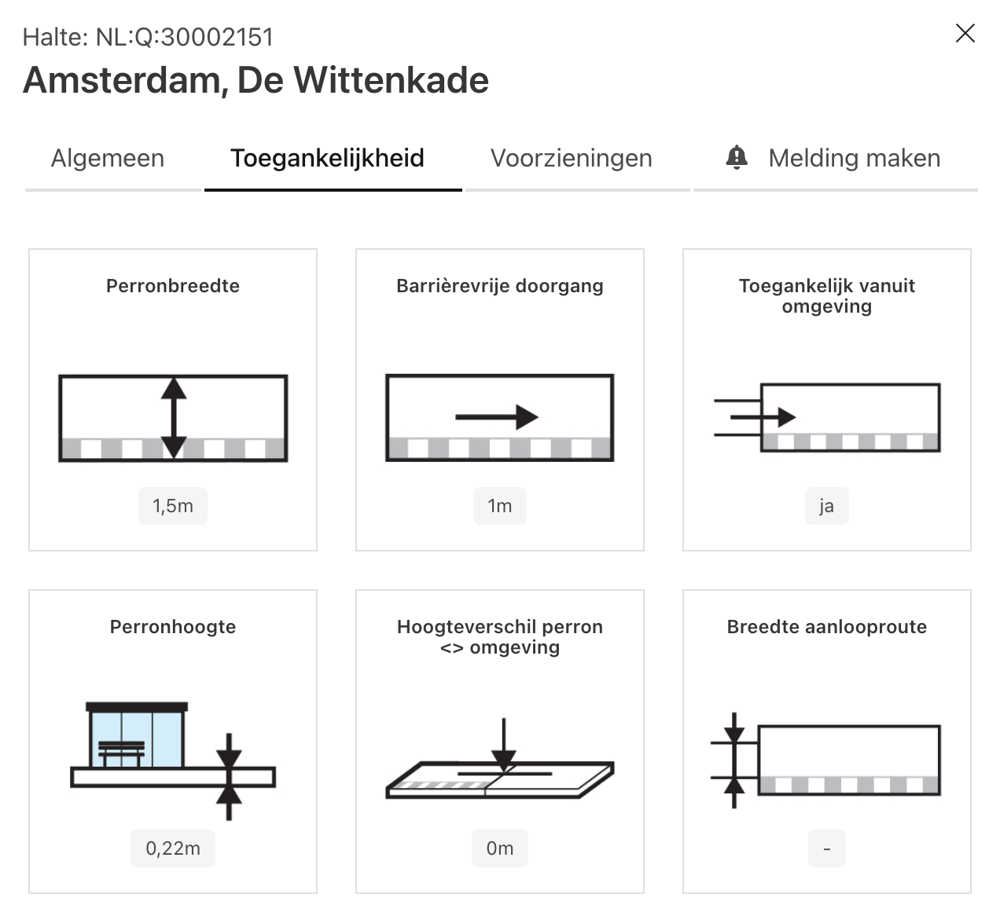

Haltebuddy:
The making of
We'll start at 11:05
☕️

Recap focusteam: multidisciplinary team that uses design thinking to
focus on one problem for about a year
Eveline
Hiske
Truke

Pita

Dianne
Wieteke
Heike

Lino
Shayla
Jurian
Project manager
Project manager
Project manager
Strategist
Strategist
Psychologist
Service designer
Data scientist
Data scientist
Product developer
Long term goal of current project: future proofing supplementary public
transport
Sub goal: make public transport more accessible to physically disabled
people
2 promising problem spaces for people with disabilities:
- Lack of visibility
- Information is hard to find and not personalized
Lack of visibility
🤔 "People don't always see you"
📢 "Asking for help can be tiring"
💡 Visibility as a service!
Halteknop
Team
Designer / project management
Psychologist / Researcher


Lack of good information
⛔️ "I can't always trust the accessibility status of a transport
stop"
📢 "I need to ask for help with the ramp, but I'm not sure whether it
will work"
💡 Personalize accessibility routing!
Haltebuddy
Team
Designer / project management
Product developer
Data analysis and scoring
Can we personalize accessibility?
📚 Data on stop properties
💡 Data + profile = personalized ℹ️
🚃 Work with GVB / Vervoerregio
📱 Building and testing the app
Interviews: accessibility shouldn't be a single binary property

Turns out there is a lot of data on public transport stops.

Research into combining data with a personal profile
We asked questions like...
- Are you able to fill in this profile?
- Do these screens make sense?
- Are you missing something?
- Do the stops around your house meet your expectations?
Outcome
- We can continue with testing an actual web application 🎉
- Ux improvements
- The need to score on multiple properties
- Integrate services and relevant information
At this point we got buy-in from
the GVB
(public transport in Amsterdam)
Proving viability of idea with no routing function (yet)
Second observable notebook
- Scoring function on multiple properties
- Fetch amsterdam panorama images (sadly offline)
- Fetch real time routes
- Scrape and show GVB elevator information
On the joy of pair programming and prototyping prototypes
Building and testing the app
Stack / way of working
-
Vue.js +
Vuetify
- Persistent store
- 'Implemented' Figma screens
- Scoring function: copy paste!
On the joy of getting the sweetest code-roast by Mani & Egemen
UX test in controlled setting
~ The end ~